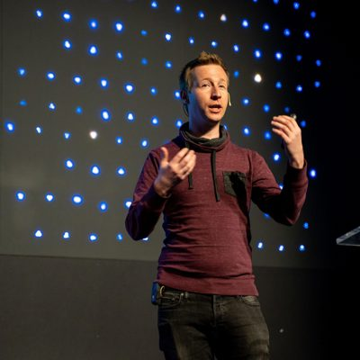
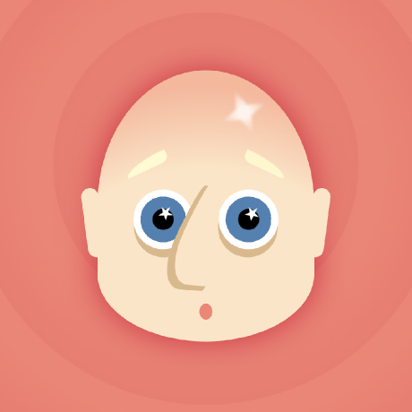
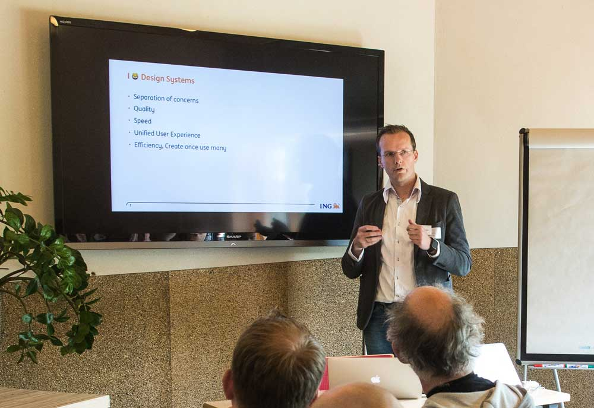
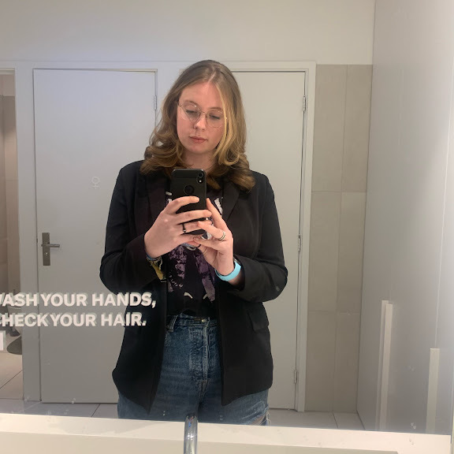
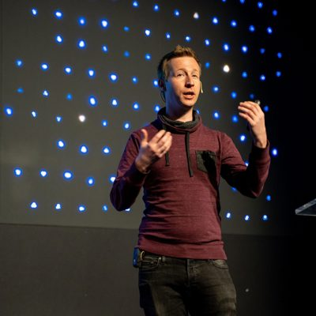
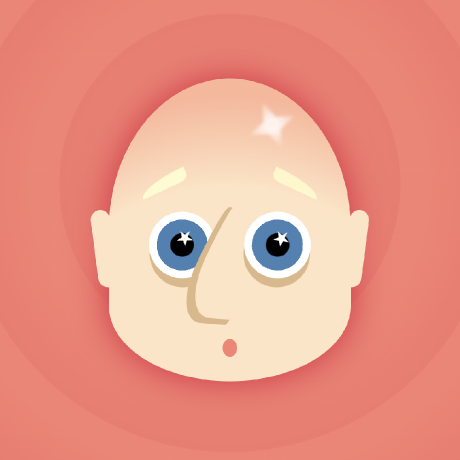
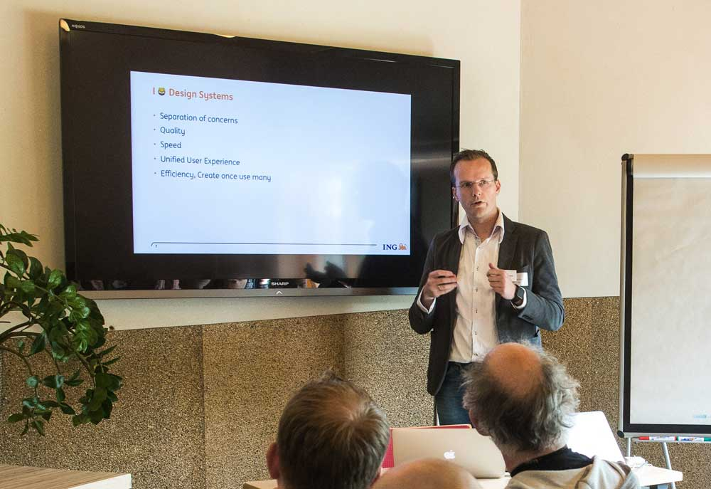
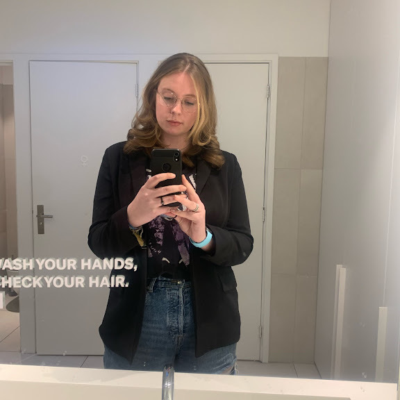

Kilian Valkhof
Peter Paul Koch

Cassie Evans

Jeremy Keith

Rosa
Sanne 't Hooft
Erik Kroes
Nienke de Keijzer
Kilian Valkhof
Peter Paul Koch
Cassie Evans
Jeremy Keith
Rosa
Sanne 't Hooft
Erik Kroes
Nienke de Keijzer
De leerdoelen die ik in het WAFS project gesteld had zijn de volgende:
Dit leerdoel begint zich zeker al te verbeteren, als ik genoeg de tijd neem om aan responsiveness te denken dan komt het er goed uit naar mijn mening. Dit is al een verbetering ten opzichte met het begin van de minor. Ook houd ik nu tijdens het werken aan een project steeds meer rekening met responsiveness.
Dit leerdoel is bij mij nog erg wisselvallig omdat ik bij de meeste projecten ChatGPT er voor het grootste gedeelte er uit gelaten heb, maar op sommige punten heb ik het nog te veel gebruikt waardoor ik bij projecte te weinig geleerd heb als dat ik had gewild.
Het laatste leerdoel heeft mij eigenlijk veel meer moeite gekost dan ik gehoopt had. Door het vak API weet ik wel hoe ik een API aan de praat krijg maar om er daarna vervolgens verder mee te werken heeft veel meer onduidelijkheid gegeven waardoor ik nog moet werken op dit leerdoel.
Als ik later aan het werk wil gaan is het doel om als front-end developer te werk te gaan. Hiervoor moet ik alleen wel veel netter de styling maken. Symmetrisch aan het werk gaan en veel tijd besteden aan de kleine dingen.
Eigenlijk zijn het er 2 in 1. De duidelijke classes en id's zijn erg belangrijk omdat ik nu in een groepje ga werken. Ik wil dat alle code die ik geschreven heb, ook duidelijkj is voor mijn collega's. Dit werkt hetzelfde met de manier hoe ik ze schrijf. Hier moet meer consistentie in komen doordat het voor veel verwarring en zoekwerk kan zorgen. Ook zou dit kunnen helpen tegen merging issues in GitHub.
Met behulp van de weekly nerds en de vakken is het steeds meer naar boven gekomen hoe fijn het is als je website ook volledig toegankelijk is. Doordat hier in de developer wereld misschien nog te weinig tijd in gestoken wordt kan dit een punt van uitblinken zijn voor een developer zoals ik.
In de Hackathon heb ik met behulp van Tom en Mike gewerkt aan een Mario Kart Character Picker waarbij we de 50 vrouwen in de tech wereld een speciaal podium geven. In dit project heb ik mijn tijd gestopt in 2 onderdelen. Het eerste onderdeel was het maken van de 3D kaart. Ik heb hierbij in Codepen meerdere varianten van kaarten gemaakt en voor het eerst gespeeld met een clip path 3d te krijgen. Voor mij was het duidelijk om een vierkant 3D te maken maar om met schuinere hoeken te werken was nieuw, ik durf wel te zeggen dat ik hier uiteindelijk trots op mag wezen hoe dit uitgepakt heeft. Het tweede onderdeel was de nieuwe customizable selects. Dit was voor mij ook nieuw om deze te stylen naar mijn eigen wil. Ik heb er voor gekozen om de kleur thema van de pagina te personaliseren.